Impedance Analyzer
The Impedance Analyzer is used to analyze capacitive and inductive elements. It uses the WaveGen 1, Oscilloscope device instruments, and reference resistor.
When the instrument is started, the Scope and WaveGen are stopped and their status shows Busy. The Impedance Analyzer takes control over these instruments while running.
The analyzer circuit can be constructed in the following ways:
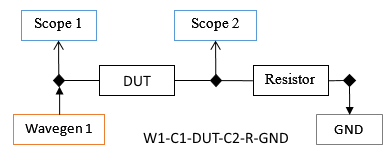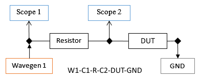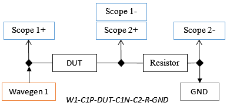
The DUT (Device Under Test) stands for the inductive or capacitive load to be analyzed and Resistor is the reference resistor. The resistor value depends on the load value and frequency.
The approximate resistor needed for different loads are the following:
| Capacitance | Ref Resistor | Inductance |
|---|
| 100 pF | 1 MΩ | |
| 1 nF | 100 kΩ | |
| 10 nF | 10 kΩ | 1uH |
| 1 uF | 1 kΩ | 10 uH |
| 10 uF | 100 Ω | 100 uH |
| 100 uF | 10 Ω | 1 mH |
When using Analog Discovery Impedance Analyzer module, select "Adapter" in the interface, after the resistor field. The IA interface will take control over the power supplies and digital IOs to control the module to switch between the resistor values: 10R, 100R, 1k, 10k, 100k, 1M
For more information visit: Analog Discovery Impedance Analyzer.
The Impedance Analyzer instrument can be used in Meter and Analyzer modes.
1. Meter
In Meter mode, the frequency can be adjusted or the Auto option can be used to decide on measurement frequency.
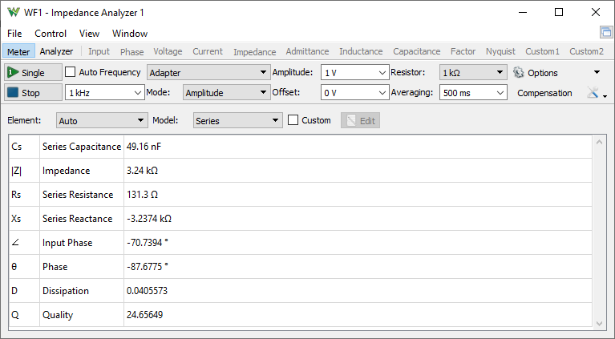
2. Analyzer
In Analyzer mode, the analysis is performed from start to stop frequency in the specified number of steps. For each step, the WaveGen channel is set to a constant frequency and the Oscilloscope performs an acquisition. Using the frequency transformation result from the index corresponding to the current frequency step, the magnitude and phase value is calculated. This data is further transformed to various impedance values.
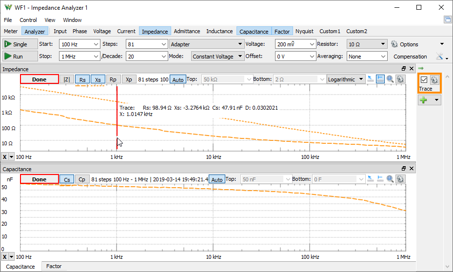
3. Menu
See Menu in Common Interfaces.
4. View
The View menu and the toolbar opens the following views.
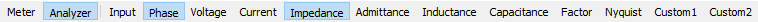
- Meter/Analyzer: switches between the simple Meter and Analyzer.
- Input: opens/closes the Input gain showing the VDUT/Vreference resistor.
- Phase: opens/closes the Phase view showing the Θ phase angle and the Input phase, DUT input vs output. The Phase is positive when DUT input signal is ahead of the output, positive for inductive and negative to capacitive loads.
- Voltage: opens/closes the Voltage view showing the RMS, real and imaginary voltages on the DUT.
- Current: opens/closes the Current view showing the RMS, real and imaginary current thorugh the DUT.
- Impedance: opens/closes the Impedance view showing the Impedance (|Z|), Series Resistance (Rs), and Series Reactance (Xs).
- Admittance: opens/closes the Admittance view showing the Admittance (|Y|), Parallel Conductance (Gp), and Parallel Susceptance (Bp).
- Inductance: opens/closes the Inductance view showing the Series (Ls) and Parallel Inductance (Lp).
- Capacitance: opens/closes the Capacitance view showing the Series (Cs) and Parallel Capacitance (Cp).
- Factor: opens/closes the Factor view showing the Dissipation (D) and Quality (Q) factors.
- Nyquist: opens/closes the Nyquist plot showing the Xs/Rs, reactance vs resistance.
- Custom1,2: opens/closes the Custom plots showing the custom values.
The following can be opened under the View menu:
- Time: opens/closes the Time view for debugging purposes.
- Notes: opens/closes Notes view.
See Plots in Common Interfaces.
Impedance measurements:
| Series mode | | Parallel mode |
| 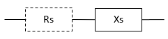 | | 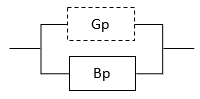 |
| |Z| | Impedance | |Y| | Admittance |
| = √ (Rs2 + Xs2) | | = √ (Gp2 + Bp2) |
| Θ | Phase | Θ | Phase |
| = tan-1 (Xs / Rs) | | = tan-1 (Bp / Gp) |
| Rs | Series Resistance | Gp | Parallel Conductance |
| | | = Rs / (Rs2 + Xs2) |
| Gs | Series Conductance | Rp | Parallel Resistance |
| = 1 / Rs | | = 1 / Gp |
| Xs | Series Reactance | Bp | Parallel Susceptance |
| = ω × Ls | | = -1 / (ω × Lp) |
| = -1 / (ω × Cs) | | = ω × Cp |
| | | = - Xs / (Rs2 + Xs2) |
| Bs | Series Susceptance | Xp | Parallel Reactance |
| = 1 / Xs | | = 1 / Bp |
| Ls | Series Inductance | Lp | Parallel Inductance |
| = Xs / ω | | = -1 / (ω × Bp) |
| Cs | Series Capacitance | Cp | Parallel Capacitance |
| = -1 / (ω × Xs) | | = Bp / ω |
| D | Dissipation Factor | D | Dissipation Factor |
| = Rs / Xs | | = Gp / Bp |
| = Rs / (ω × Ls) = 1 / (ω × Ls × Gs) | | = ω × Lp × Gp = ω × Lp / Rp |
| = ω × Cs × Rs = ω × Cs / Gs | | = Gp / (ω × Cp) = 1 / (ω × Cp × Rp) |
| Q | Quality Factor | Q | Quality Factor |
| = Xs / Rs | | = Bp / Gp |
| = ω × Ls / Rs = ω × Ls × Gs | | = 1 / (ω × Lp × Gp) = Bp / (ω × Lp) |
| = 1 / (ω × Cs × Rs) = Gs / (ω × Cs) | | = ω Cp / Gp = ω × Cp × Rp |
| |
| ω | Angular Frequency | | |
| = 2 × π × Frequency |
4.1. Quick Measure
See Quick Measure in Common Interfaces.
Vertical measurement mode displays the trace value at the respective frequency position, first the current view value followed by the values from the other opened view.
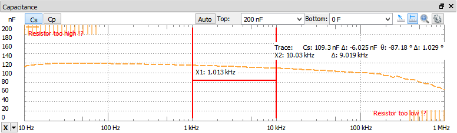
4.2. Cursors
See Cursors in Common interfaces.
It displays the trace value at the respective frequency position, first the current view value followed by the values from the other opened view.
5. Control
The control area lets you adjust the settings for the impedance analysis.
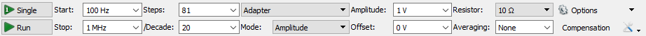
- Single button: starts a single analysis.
- Run/Stop button: starts repeated analysis or stops.
- Auto button: enables/disables the auto adjustment of frequency in meter mode.
- Frequency: lets you specify the frequency in meter mode.
- Start: lets you specify the analysis start frequency.
- Stop: lets you specify the analysis stop frequency.
- Steps: lets you specify the number of frequency points used for the analysis.
- /Decade: lets you specify the number of steps per decade for logarithmic scale.
- Order: selects the measurement circuit between: "W1-C1-DUT-C2-R-GND", "W1-C1-R-C2-DUT-GND", "Adapter".
- Mode: lets you select control mode between:
- Amplitude: lets you adjust the Wavegen amplitude.
- Custom: lets you use custom script to automatically adjust the amplitude and the resistor values.
- Constant Voltage/Current: lets you specify a DUT voltage/current that will try to reach at each step adjusting the amplitude.
- CV/CC Resistor: lets you specify a DUT voltage/current that will try to reach at each step adjusting the amplitude and also the resistor value. Available with Impedance Analyzer Adapter
- Amplitude: lets you specify the amplitude of the stimulus signal.
- Offset: lets you specify the offset for the stimulus signal.
- Resistor: lets you select the reference resistor value.
- Averaging: specifies the averaging time for each step.
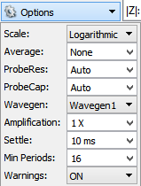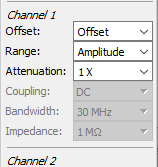
- Scale: selects between linear or logarithmic frequency sweep.
- Average: specifies the number captures to average in each step. In each step it will perform and show the result of at least the average number of captures or more if it manages in the specified averaging time.
- ProbeRes/ProbeCap: lets you specify the probe resistance and capacitance. Leave Auto option to use device specific values for: Analog Discovery 2 43pF/1.04MΩ, for Analog Discovery 45pF/1.041MΩ, for Electronics Explorer 22pF/1MΩ
- Wavegen: selects the WaveGen channel to use.
- Amplification: specifies the external amplification of the signal.
- Settle: specifies the settle time expressed in seconds. The acquisition is delayed this amount of time in each step after the frequency is changed. This option can be used to reduce the alteration effect of resonant circuits (for instance, a speaker).
- Min Periods: specifies the minimum number of generated sine periods to capture.
- Samples: specifies the number of samples in capture to take at each frequency step. The default is maximum at up to 32ki. Higher number improves the resolution and accuracy but it can slow down the measurement process.
- Warning: enables or disables the warnings. Ideally the reference resistor should be equal to the DUT impedance otherwise the measurements may gradually loose resolution or accuracy. The warning is shown when the ratio between these is above 25.
- The further options allow configuration of each oscilloscope channel as follows: Offset, Range, Attenuation, and Coupling.
The compensation function eliminates the test fixture and cabling errors, improving the measurement accuracy.
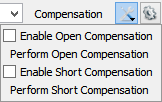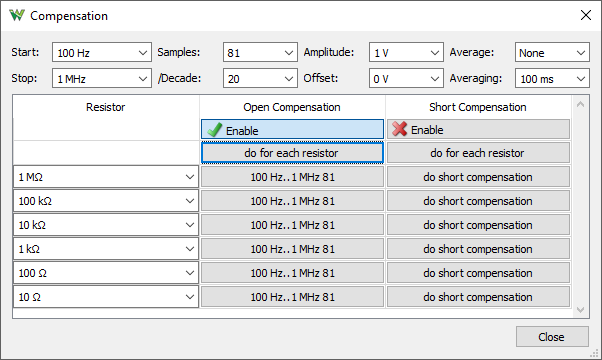
The compensation is important, especially for analysis at frequencies higher than 100kHz.
The exact resistor values can be specified in the second column. The open and short compensation can be enabled in the following columns first row and performed with the buttons.
6. Trace/Reference
The current analysis is performed in the Trace and this can be saved as Reference for comparison.
The check-box shows or hides the respective trace in the plots.
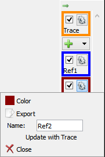
The trace options contains the following:
- Color: sets the trace waveform color.
- Export: opens export window with the respective trace data, see Export in Common Interfaces.
- Name: specifies the trace name.
- Update: updates the Reference trace with the Trace.
- Close: removes the Reference trace.
7. Export
See Export in Common Interfaces.